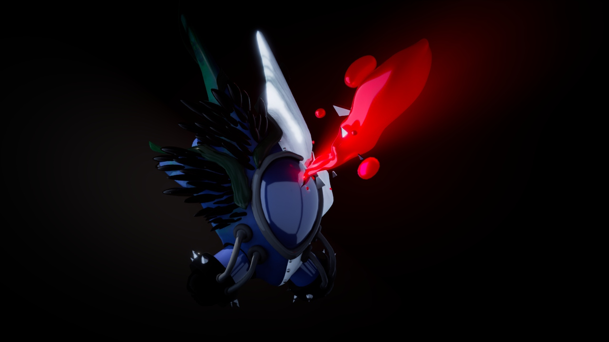
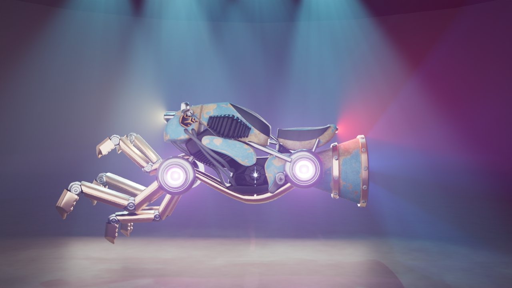
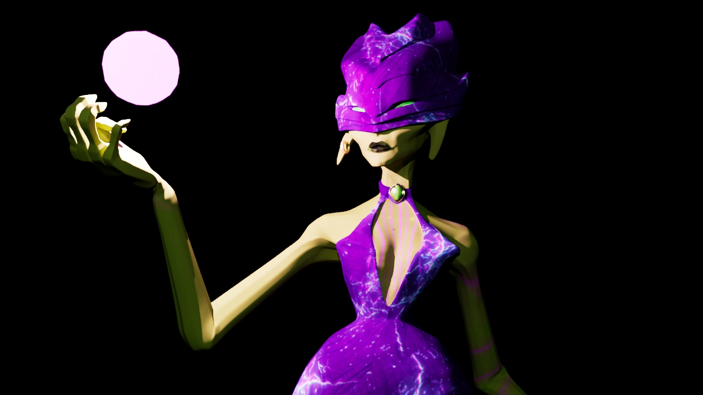

Gallerie

Casque Dragon
Inspiré du film Le seigneur des anneaux, l'oeil au milieu et les motifs sur la partie dorée ont été travaillé avec le bump à la main via maya ainsi que photoshop.
Logiciels : Maya - Photoshop

Masque CyberAqua
Ce projet marque ma première réalisation sur le logiciel Autodesk Maya. Il met en scène une civilisation sous-marine dont la survie et le développement reposent sur la mystérieuse Pierre de Lune, source de pouvoir et d’équilibre pour leur cité.
Logiciels : Maya - 3D Painter

Véhicule fictif
Conçue dans l’univers de **CyberAqua**, cette moto fusionne l’esthétique organique du bernard-l’ermite avec un design mécanique futuriste. Ce projet explore l’équilibre entre nature et technologie à travers une approche biomécanique.
Logiciels : Maya - 3D Painter

Mirage
Un personnage antagoniste fictif incarnant une énergie sombre et mystérieuse. J’ai conçu et animé le personnage, puis assemblé l’ensemble des éléments visuels pour créer une composition de poster harmonieuse.
Logiciels : Maya - 3D Painter
Vidéo Promotionnelle
Création d’une vidéo promotionnelle fictive avec After Effects pour annoncer un tournoi de volleyball à Montréal. Le travail inclut l’animation graphique, le montage visuel et la mise en scène d’éléments dynamiques pour renforcer l’impact visuel.
Logiciels : After Effect

{kind=link}
{kind=link}
{kind=link}
{kind=link}
{kind=link}
{kind=link}
{kind=link}
{kind=link}
{kind=link}
{kind=link}
{kind=link}